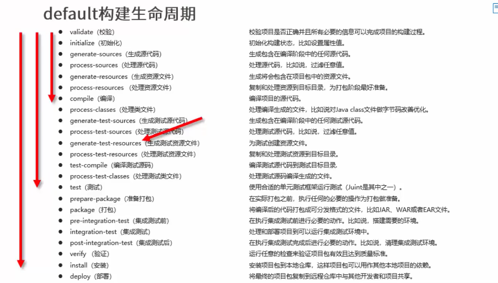
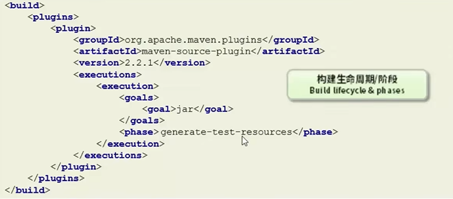
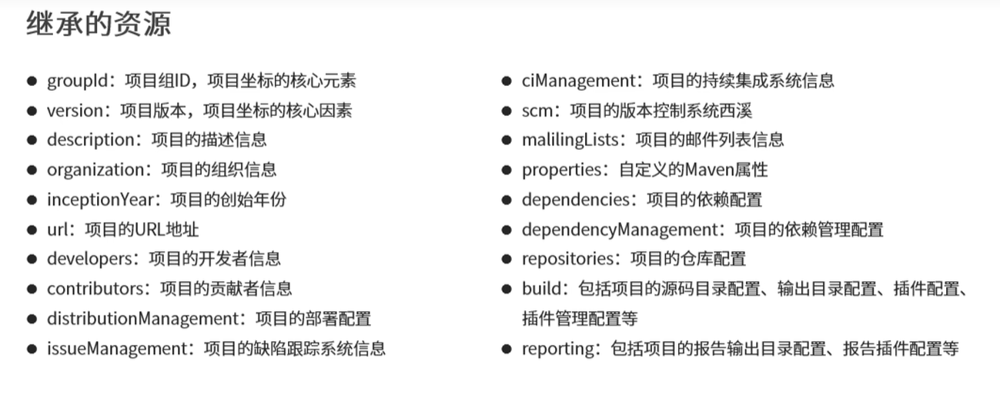

Maven 项目构建命令
1 | mvn compile # 编译 |
pom.xml 文件
1 |
|
依赖管理
依赖传递
依赖具有传递性
- 直接依赖：在当前项目中通过依赖配置建立的依赖关系。
- 间接依赖：如果项目配置的依赖有依赖其他资源，则该项目也依赖这些资源。
依赖传递冲突问题
- 路径优先：直接依赖优先于间接依赖，层级越深，优先级越低。
- 声明优先：层级相同，配置靠前优先。
- 特殊优先：同级配置了相同资源的不同版本，后配置的覆盖先配置的。（也可能会报错）
可选依赖
对外隐藏依赖，在依赖添加 <optional> 标签，值为 true。
1 | <dependencies> |
排除依赖
排除项目配置的依赖 的 依赖资源 (主动断开连接) 。使用 <exclusions> 添加需要排除的依赖资源。
1 | <dependency> |
依赖范围
依赖的 jar 默认情况可以在任何地方使用，可以通过 scope 标签设定其作用范围。
作用范围：
- 主程序范围有效（main 文件夹范围内）
- 测试程序范围内有效 （test 文件夹范围内）
- 是否参与打包（package 指令范围内）
| scope 值 | 主程序 | 测试范围 | 打包 | 典型范例 |
|---|---|---|---|---|
| compile (默认) | Y | Y | Y | log4j |
| test | Y | junit | ||
| provided | Y | Y | servlet-api | |
| runtime | Y | jdbc |
生命周期与插件
compile -> test-compile -> test -> package -> install
Maven 对项目构建的生命周期划分为 3 套：
- clean ：清理工作。
- default ：核心工作。例：编译、测试、打包、部署等。
- site ：产生报告、发布站点等。

插件
- 插件与生命周期内的阶段绑定，在执行到对应的生命周期时，执行该生命周期阶段对应的插件功能；
- 默认 maven 在各个生命周期上绑定有预设的功能；
- 通过插件可以自定义其它功能。

<phase> 标签，将插件 maven-source-plugin（打源码的插件） 与 生命周期阶段 generate-test-resources 绑定，在执行到该生命周期阶段时，会执行该插件的功能。
<goal> 标签，表示该插件执行什么功能。如：上图中的功能就是对源码打包。
继承
在子工程中定义依赖关系，无需声明依赖版本，版本参照父工程中依赖的版本。

继承与聚合
-
作用
-
聚合用于快速构建工具。
-
继承用于简化配置。
-
-
相同点
-
聚合与继承的 pom.xml 文件打包方式均为 pom（<packaging> 的值为 pom），可以将两种关系制作到同一个 pom 文件中。
-
聚合与继承均属于设计型模块，并无实际的模块内容。
-
-
不同点
-
聚合是在当前模块中配置关系，聚合可以感知到参与聚合的模块有哪些。
-
继承是在子模块中配置关系，父模块无法感知哪些模块继承了自己。
-
私服
nexus 服务器
如果您喜欢此博客或发现它对您有用，则欢迎对此发表评论。 也欢迎您共享此博客，以便更多人可以参与。 如果博客中使用的图像侵犯了您的版权，请与作者联系以将其删除。 谢谢 ！